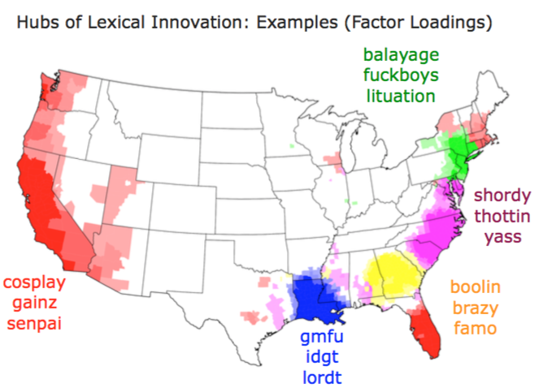
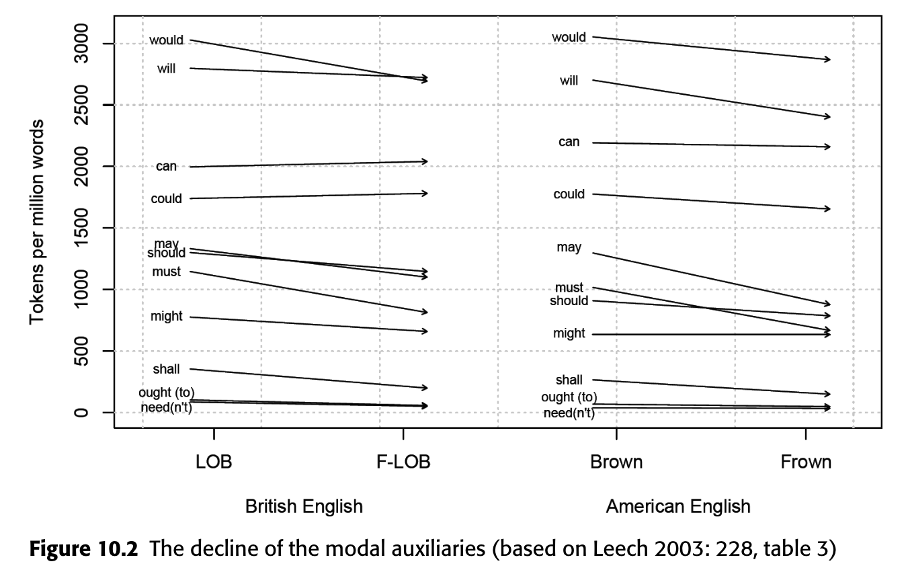
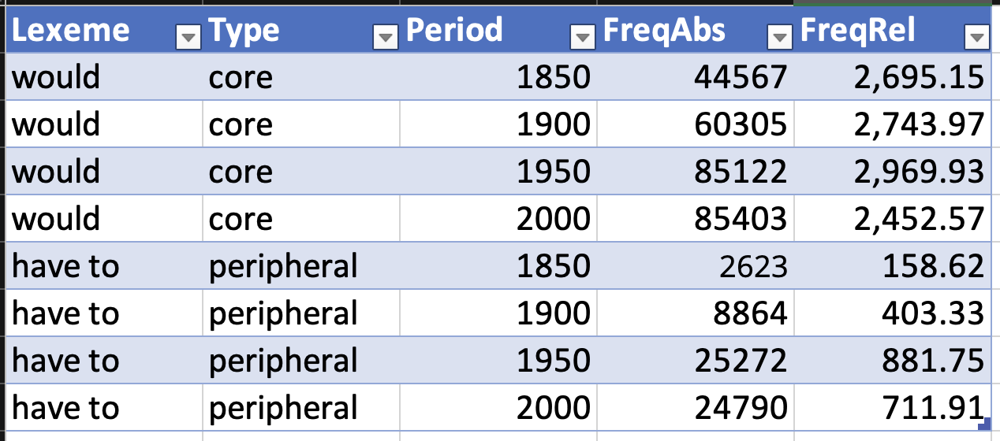
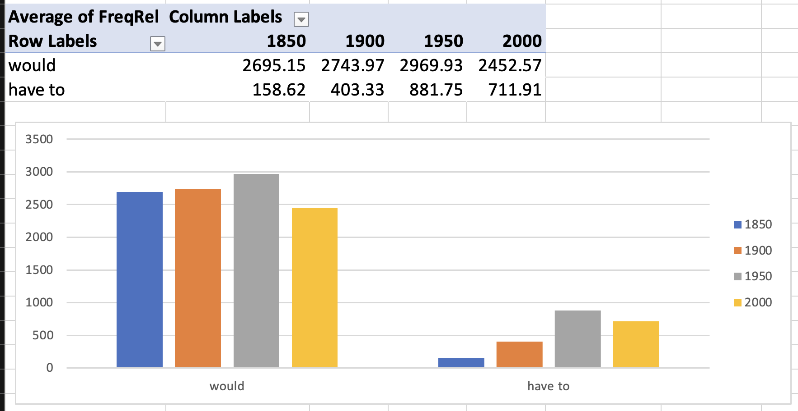
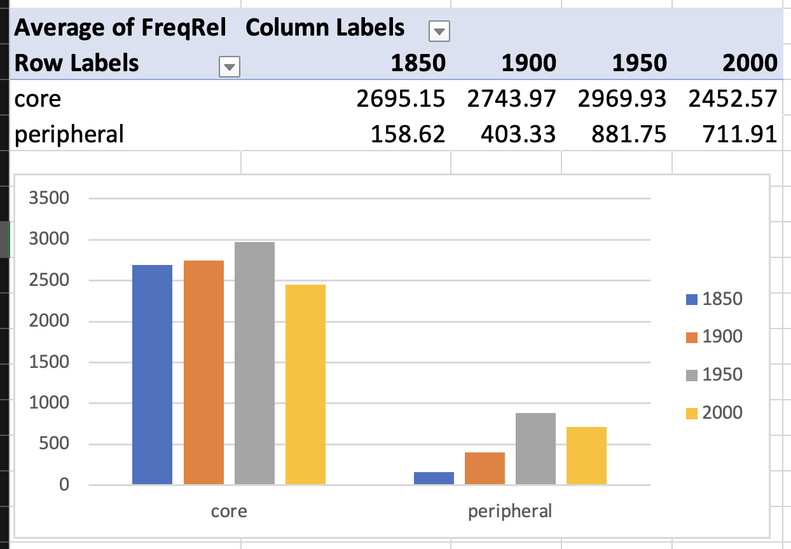
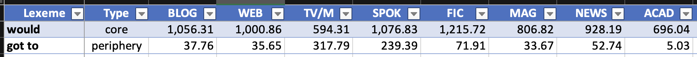
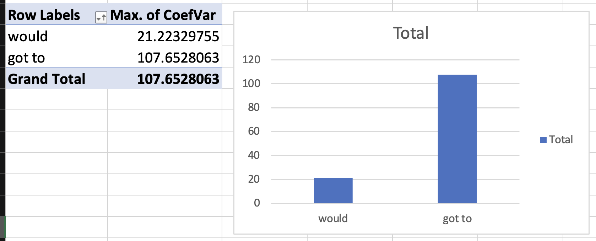
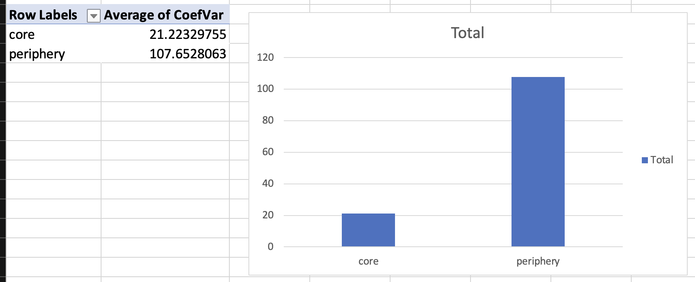

Lexical variation
Lexicology and Lexicography
Hilpert and Mair (2015): study questions
Dimensions of variation
Types of variation
- Diatopic: Geographic/regional variation
- Diastratic: Social variation (class, education, age)
- Diaphasic: Situational variation (register, style)
Language change = language variation over time = diachronic variation
Variation based on “user” and “language use”

Speaker variation
Regional variation in lexical innovation

Situational variation: Register
Register variation
Register: Variation that depends on language use, not the user. Includes lexical, phonological, and grammatical features.
Examples:
- Academic: lexical item, corpus analysis, frequency distribution
- Informal: word, text study, how often
- Technical: morphological process, phonological rule
- Everyday: word formation, sound pattern
Key insight: The same speaker uses different vocabulary in different situations.
Case study: Modal verbs in English
Lexical change and variation in English modal verbs
Research foundation: (Hilpert and Mair 2015)
“Another domain of English grammar that is currently undergoing change is the domain of modality, specifically the modal auxiliaries. In the most general of terms, the situation is that several of the core modal auxiliaries are declining in text frequency (Leech 2003; Mair 2006), while at the same time new quasi-modal elements are undergoing grammaticalization (Krug 2000).” (Hilpert and Mair 2015, 185–86)
Research questions:
- Why are certain forms declining while others increase?
- Is there a relation between these developments?
- How do we assign cause and effect roles?
Core and peripheral modals
Core modals
- will, would
- can, could
- may, might
- shall, should
- must
Peripheral modals
- BE going to
- have to
- got to
- need to
Pattern: Core modals show frequency decline while peripheral modals show increase.
Frequency changes over time
Corpus evidence
Brown family of corpora: Brown (1961), LOB (1961), Frown (1992), FLOB (1992)

“Parallel cross-variety declines are particularly in evidence for the modals would, may, should, must, and shall.” (Hilpert and Mair 2015, 186)
Declining core modals: would, may, should, must, shall
Increasing peripheral modals: BE going to, have to, got to, need to
“This is further corroborated by Hilpert (2008: 37), who finds that typical verbal collocates of shall in the British National Corpus are the explicitly metalinguistic verbs consider, examine, discuss, and argue. The decline of shall is thus to be seen as a retraction into a highly specific communicative genre.” (Hilpert and Mair 2015, 186–87)
Text type variation
Genre-specific patterns
“In a study that is based on the Time magazine corpus (Davies 2007), Millar (2009) tracks the frequency of the modal auxiliaries in American English press writing. He finds that shall, must, and ought are declining between the 1920s and the 2000s, but that interestingly, can, could, and may are undergoing substantial frequency increases and will, might, and should show at least small increases (Millar 2009: 205).” (Hilpert and Mair 2015, 187)
Time magazine corpus analysis (Millar 2009):
- shall, must, ought declining (1920s-2000s)
- can, could, may increasing substantially
- will, might, should showing small increases
“One explanation for the discrepancies between the tendencies in the Brown family of corpora and in the Time corpus is the composition of the respective corpora. Whereas the Brown corpora represent a balanced set of genres, the Time corpus represents a single text type.” (Hilpert and Mair 2015, 187)
Key finding: Text type variation can explain frequency discrepancies across different corpora.
Practice: Corpus analysis of modal verbs
Collaborative analysis
Microsoft Excel spreadsheet: https://1drv.ms/x/c/9a2ec97d593520f9/EezC1WmhjPNEiVR-eERIIU8BdRV5kbqEGw-17MMMJAr2gQ
Task 1: Study modal verb frequency changes in COHA
Search queries:
| Core | Peripheral |
|---|---|
would *_vv |
BE going to *_vv |
may *_vv |
HAVE to *_vv |
should *_vv |
got to *_vv |
must *_vv |
NEED to *_vv |
shall *_vv |
Time intervals: 1850, 1900, 1950, 2000

Practice: Frequency analysis
Individual modal analysis

Group analysis

Practice: Text type specificity
Coefficient of Variation (CV)
Definition: Statistical measure of relative variability.
\[ \begin{align} CV &= \frac{\sigma}{\mu} \times 100 \\ &= \frac{\text{Standard Deviation}}{\text{Mean}} \times 100 \end{align} \]
Application: Measures variability of word frequencies across different text types.

Excel calculation:
- Calculate mean:
=AVERAGE(A1:A10) - Calculate standard deviation:
=STDEV.S(A1:A10) - Calculate CV:
=(B2/B1)*100
Practice: Text type results
Individual modal differences

Group differences

Key finding: Core modals show higher text type specificity (higher CV) than peripheral modals.
Summary
Summary
General takeaways:
- Variation is fundamental: Lexical variation occurs across multiple dimensions
- Speaker variation: Regional (dialect) and social (sociolect) differences
- Situational variation: Register differences based on context and use
Modal verbs:
- Diachronic patterns: Modal verbs show systematic frequency changes over time
- Text type specificity: Different modals show varying degrees of genre preference
- Corpus methods: Quantitative analysis reveals patterns not visible through intuition alone